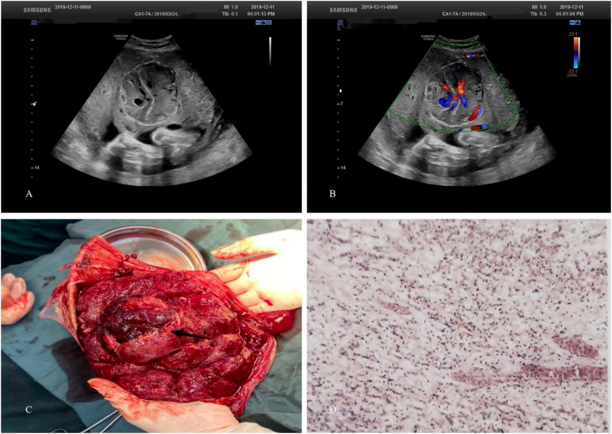
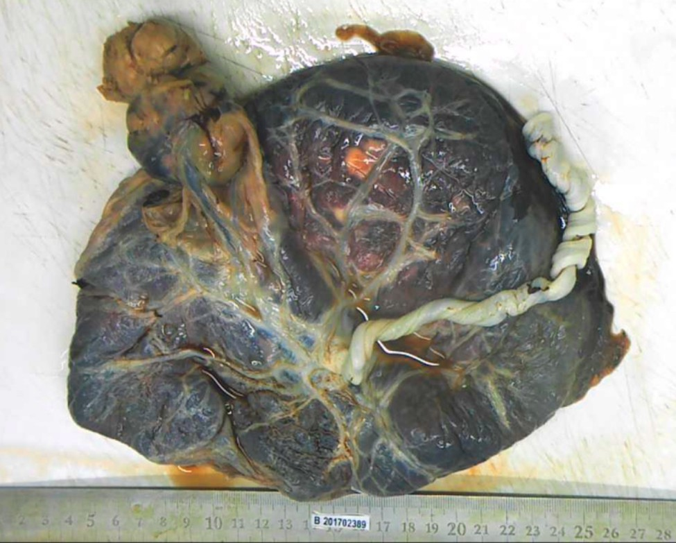
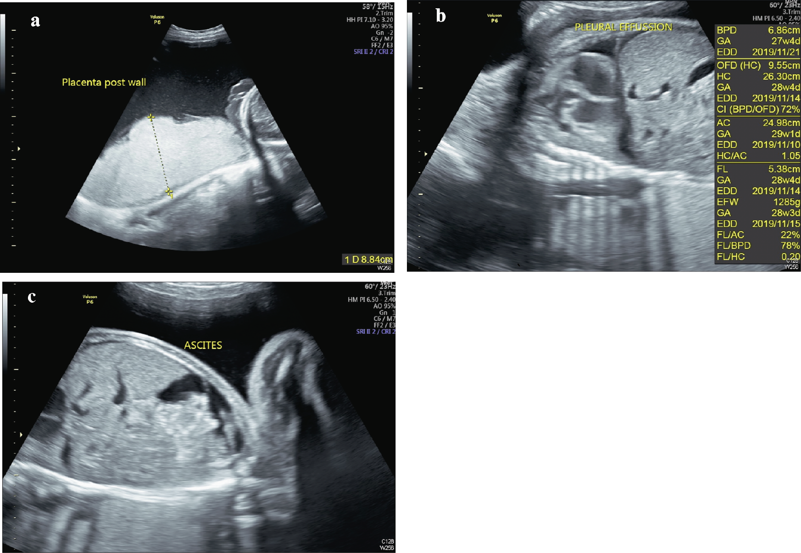

1672 — U máu bánh nhau lớn: ngưỡng 4,7 cm, shunt mạch → đa ối / suy tim thai và khi nào can thiệp / Giant placental chorioangioma
Tags: pattern:u-mach-banh-nhau pattern:da-oi pattern:thai-phu pattern:thieu-mau-thai pattern:suy-tim-thai vung:banh-nhau vung:thai-nhi score:MCA-PSV protocol:SA-Doppler-mau protocol:MRI-thai protocol:laser-fetoscopic
Mức chắc chắn (certainty): tổng hợp y văn (literature synthesis) — số liệu từ đoàn hệ 102.399 ca sinh (PMC10210461), đoàn hệ 94 ca có ROC theo đường kính (PMC12681165), phân tích gộp 28 nghiên cứu/161 thai (Buca 2020, DOI 10.1002/uog.20304) và các ca nguyên văn dùng cho quiz (PMC10956381, PMC10210461).
1. Tổng quan bệnh học – cơ chế hình ảnh
1.1. Bản chất mô học và vì sao khối này "ăn máu"
- U máu bánh nhau (placental chorioangioma, chorangioma) là u lành tính, không phải nguyên bào nuôi (non-trophoblastic) — thực chất là hamartoma mạch máu phát sinh từ trung mô màng đệm nguyên thủy (primitive chorionic mesoderm): một mạng mao mạch nằm trong chất nền nhung mao phì đại, phủ một lớp nguyên bào nuôi. Vì vậy trên siêu âm khối đặc, bờ rõ, nằm trong bánh nhau và có mạch nuôi rõ từ màng đệm (chorionic plate) — khác hoàn toàn với ổ nhồi máu (infarct) hay máu tụ (hematoma) vốn không có dòng chảy bên trong.
- TẠI SAO gây bệnh cảnh toàn thân: mạng mao mạch trong u tạo shunt động–tĩnh mạch trong bánh nhau với sức cản rất thấp. Máu từ động mạch rốn chảy thẳng vào u rồi về tĩnh mạch rốn, không qua mao mạch nhung mao bình thường → dòng chảy cao, vận tốc cao, RI thấp trên Doppler; đồng thời một phần máu thai bị "ăn cắp" (steal) khỏi phần bánh nhau còn lại.
- Hệ quả sinh lý theo 4 trục:
- Cung lượng tim thai tăng (high-output): tim to, hở ba lá, đảo dòng sóng a ống tĩnh mạch (ductus venosus) → phù thai (hydrops);
- Dịch rỉ từ mặt u + đa niệu do tăng cung lượng → đa ối (polyhydramnios);
- Thiếu máu mạn do xuất huyết trong u/tiêu hủy hồng cầu → MCA-PSV > 1,5 MoM;
- Suy bánh nhau tương đối → thai chậm tăng trưởng (FGR/SGA).
- Ở mẹ, u lớn có thể gây hội chứng gương (mirror syndrome / Ballantyne): mẹ phù, tăng cân, thiểu niệu, protein niệu, pha loãng máu (albumin giảm) — bệnh cảnh mẹ "sao chép" tình trạng phù thai.
1.2. Ngưỡng định lượng phải nhớ
- Tần suất: 0,41–1,4% bánh nhau khi soi mô học; đoàn hệ 102.399 ca sinh ghi nhận 0,17% (175/102.399), trong đó u lớn ≥ 4 cm chỉ 0,04% (44/102.399). U "khổng lồ" ước 1/9.000–1/50.000 ca sinh. Đa số u < 1 cm và chỉ phát hiện khi đọc mô học (102/177 = 57,6% trong đoàn hệ trên).
- Ngưỡng đường kính: phân tích ROC trên 94 thai cho 4,7 cm là điểm cắt dự báo biến cố (Se 82,1%, Sp 50,0%, AUC 0,705; OR 1,026 mỗi 1 mm đường kính tăng). Các biến cố nặng (sảy, hội chứng gương, phù thai, suy tim thai, thiếu máu thai, thai lưu, tử vong sơ sinh) chủ yếu xảy ra khi u > 9 cm.
- Yếu tố tiên lượng thứ hai — vị trí: trong 44 u lớn, nhóm có biến cố nặng có đường kính trung vị 6 cm so với 5 cm (p = 0,006) và khoảng cách u–chỗ bám dây rốn trung vị 1 cm so với 3 cm (p = 0,025). U càng sát chỗ bám dây rốn càng nguy hiểm vì shunt nằm ngay trên trục tuần hoàn thai–bánh nhau.
- Nguy cơ nền (phân tích gộp, thai không can thiệp): thai lưu 8,2%, tử vong sơ sinh 3,8%, tử vong chu sinh 11,1%, SGA 24,0%, sinh non < 37 tuần 34,1%, bệnh tật sơ sinh 12,0%, dấu hiệu tuần hoàn tăng động 21,0%, MCA-PSV tăng 20,6%. Khi phù thai xuất hiện, tiên lượng xấu đi rõ rệt.
2. Mẫu hình + chẩn đoán phân biệt theo vị trí (gamut)
2.1. Gamut theo "khối trong bánh nhau có mạch máu"
| Nhóm | Đặc điểm nhận diện |
|---|---|
| U máu bánh nhau (chorioangioma) | Khối đặc, bờ rõ, hồi âm hỗn hợp, mạch nuôi từ màng đệm + dòng chảy phong phú bên trong, thường 1 ổ |
| Chorioangiomatosis | Nhiều nốt nhỏ rải rác, bánh nhau dày; bệnh cảnh toàn thân nặng hơn kích thước từng nốt |
| Loạn sản trung mô bánh nhau (placental mesenchymal dysplasia, PMD) | Bánh nhau to, nhiều khoang dịch "pho mát Thụy Sĩ", không có khối đặc duy nhất có mạch nuôi; liên quan Beckwith–Wiedemann, AFP tăng |
| Thai trứng bán phần (partial hydatidiform mole) | Nhiều nang nhung mao + thai, hCG tăng mạnh, hay sảy |
| Nhồi máu / máu tụ bánh nhau | Vùng hồi âm thay đổi, không có dòng chảy bên trong, thường bờ theo phân thùy |
| Thùy bánh nhau phụ (succenturiate lobe) | Mô bánh nhau bình thường cùng hồi âm, nối bằng mạch màng ối; nguy cơ vasa previa |
- Theo vị trí (quyết định độ nặng): (1) cạnh dây rốn / trung tâm — shunt gần trục, nguy cơ cao nhất; (2) ngoại vi/ở mép bánh nhau — 38,6% (17/44) u lớn; (3) có cuống (pedunculated), lồi vào buồng ối — nguy cơ xoắn cuống, chảy máu, vỡ; (4) dây rốn xuyên qua u (1 ca trong 44) — bẫy khi đẩy kim chọc ối/truyền máu.
- Theo kích thước: < 4 cm thường im lặng; 4–9 cm** là vùng cần theo dõi sát; **> 9 cm là vùng biến cố nặng.
3. Bảng so sánh phân biệt (ma trận đối chiếu)
| Thực thể (entity) | Hình ảnh điển hình | Chốt vào (rule-in) | Chốt loại (rule-out) | Gợi ý xác nhận |
|---|---|---|---|---|
| U máu bánh nhau | Khối đặc bờ rõ trong bánh nhau, hồi âm hỗn hợp, mạch nuôi từ màng đệm | Dòng chảy trong khối + mạch nuôi + khối đơn độc | Bờ mờ lan tỏa, nhiều khoang dịch → PMD/trứng | Doppler màu, MRI, mô học sau sinh |
| PMD | Bánh nhau rất dày, nhiều khoang dịch "pho mát Thụy Sĩ", không có mạch nuôi đơn độc | Nhiều khoang + bánh nhau to + AFP tăng | Khối đặc có mạch nuôi → u máu | Siêu âm + AFP + theo dõi Beckwith–Wiedemann |
| Thai trứng bán phần | Nang nhung mao + phần thai, hCG rất cao | hCG tăng mạnh + nang lan tỏa | Khối đặc đơn độc + thai bình thường | hCG, mô học |
| Nhồi máu / máu tụ bánh nhau | Vùng hồi âm bất thường, bờ theo phân thùy | Không có dòng chảy trong tổn thương | Có mạch nuôi → u máu | Doppler màu; theo dõi |
| Thùy bánh nhau phụ | Đảo mô bánh nhau tách khỏi bánh chính, hồi âm như bánh nhau | Hồi âm đồng nhất với bánh nhau + mạch màng ối | Khối hồi âm khác biệt + tăng sinh mạch → u | Khảo sát màng ối, Doppler |
| Chorioangiomatosis | Nhiều nốt nhỏ, bánh nhau dày | Nhiều nốt + bánh nhau dày + biến cố toàn thân | Một khối lớn → u máu đơn độc | Mô học sau sinh |

A: khối bờ rõ, hồi âm không đồng nhất trong bánh nhau. B: Doppler màu — mạng mạch phong phú trong khối. C: đại thể sau sinh — nốt đỏ, chắc, tách khỏi mô bánh nhau. D: H&E — tăng sinh mạch cỡ mao mạch trong chất nền nhung mao. Nguồn: Wu X và cộng sự, BMC Pregnancy Childbirth 2025;25:1294 (PMC12681165, Figure 2), CC BY-NC-ND 4.0 — ảnh nguyên bản, không crop/ghép.
Khối mạch máu lớn có cuống nối với bánh nhau bằng một cuống mạch mảnh, bề mặt có mạng mạch nổi rõ; thước chia vạch cm trong ảnh. Đây là thể dễ xoắn cuống và dễ chảy máu khi can thiệp. Nguồn: Ma H, Liu Z, Ruan J, BMC Pregnancy Childbirth 2023;23:381 (PMC10210461, Figure 2), CC BY 4.0.4. Protocol chụp + phân tầng nguy cơ + lựa chọn can thiệp
4.1. Siêu âm — bộ đo tối thiểu mỗi lần khám
- Đường kính lớn nhất (3 chiều) và số ổ; ghi rõ khoảng cách từ bờ u tới chỗ bám dây rốn (mm).
- Doppler màu/công suất: có mạch nuôi từ màng đệm? RI/PSV của mạch nuôi (RI thấp = shunt mạnh).
- Lượng ối: AFI hoặc DVP; đa ối định nghĩa AFD > 8 cm hoặc AFI > 25 cm. Trong đoàn hệ 44 u lớn, đa ối gặp 27,3% (12/44), AFI cao nhất 41,3 cm.
- Thiếu máu thai: MCA-PSV tính theo bội số trung vị (MoM); ngưỡng hành động > 1,5 MoM. Ca trong đoàn hệ đã được chỉ định đốt u khi MCA-PSV 2,13 MoM.
- Suy tim thai: chỉ số tim–ngực (cardiothoracic ratio) > 0,5, hở ba lá, đảo dòng sóng a tĩnh mạch rốn/ống tĩnh mạch, dấu "gan trời sao" (starry sky liver).
- Tăng trưởng: ước lượng cân nặng, siêu âm Doppler động mạch rốn.
Nhịp theo dõi: u < 4 cm — mỗi 4 tuần; u ≥ 4,7 cm — mỗi 1–2 tuần, kèm AFI, động mạch rốn, MCA, ống tĩnh mạch và siêu âm tim thai (khuyến nghị trực tiếp từ nghiên cứu ROC).
4.2. Phân tầng và luồng xử trí
flowchart TD
A[Khối đặc trong bánh nhau có mạch nuôi] --> B{Đường kính lớn nhất}
B -->|< 4 cm, không biến chứng| C[Theo dõi 4 tuần/lần]
B -->|4-9 cm| D[Theo dõi 1-2 tuần: AFI, MCA-PSV, tim thai]
B -->|> 9 cm| E[Nguy cơ biến cố nặng: cân nhắc can thiệp sớm]
D --> F{Có phù thai, thiếu máu hay suy tim?}
F -->|Không| D
F -->|Có| G[Hội chẩn bào thai: đốt mạch nuôi hoặc RFA]
G --> H{Thiếu máu MCA-PSV > 1,5 MoM?}
H -->|Có| I[Truyền máu trong tử cung]
H -->|Không| J[Theo dõi sát sau can thiệp]
E --> G
4.3. Can thiệp — bằng chứng và giới hạn
| Can thiệp | Chỉ định thực hành | Số liệu chính |
|---|---|---|
| Theo dõi + chọc hút ối (amnioreduction) | Đa ối gây khó thở, cơn co | 2/12 ca đa ối phải chọc hút; 1 ca dùng indomethacin đường uống |
| Đốt mạch nuôi qua nội soi thai (fetoscopic laser) | U có 1–2 mạch nuôi rõ, thai còn bù trừ | Trong phân tích gộp, nhóm được can thiệp trong tử cung có tử vong chu sinh 31,2% (18,1–46,1%) và 57,3% hết phù/tuần hoàn tăng động — nhưng đây là nhóm bệnh nặng nhất, không có RCT |
| Đốt nhiệt bằng sóng cao tần (RFA) | U không cuống, khó đốt mạch nuôi | Ca 9,4 × 8,8 × 5,5 cm kèm phù + thiếu máu nặng: truyền máu + RFA → nhịp chậm rồi vô tâm thu, phải mổ cấp |
| Đốt laser trong u (interstitial laser) + chọc hút ối | U lớn nhiều mạch nuôi | Ca 7,9 × 5,6 × 5,4 cm: tắc hoàn toàn mạch nuôi, nhưng 2 ngày sau phù thai thoáng qua (hở ba lá, gan trời sao), sau đó thai đủ tháng |
| Nút mạch bằng microcoil | Ca chọn lọc | Báo cáo ca, chưa có loạt lớn |
| Propranolol đường uống cho mẹ | Hướng mới cho u tăng sinh/suy tim thai | Loạt 4 thai (Leiden 2023–2025): tim thai bình thường hóa, hết phù, u thoái triển và huyết khối trong u |
- Nguyên tắc thực hành: can thiệp chỉ đặt ra khi có phù thai, thiếu máu (MCA-PSV > 1,5 MoM), suy tim hoặc đa ối nặng; u nhỏ không triệu chứng không can thiệp.
- Khi nào lấy thai: thai ổn định — chờ 37–38 tuần; có phù/suy tim tiến triển — cân nhắc sinh sớm sau khi đã hội chẩn và chuẩn bị hồi sức sơ sinh. Trong 44 u lớn, sinh non < 37 tuần 30,6%, < 34 tuần 13,9%, < 32 tuần 11,1%; nhập NICU 23,3%.
- Sau sinh: khám da trẻ tìm u máu nhiều ổ (benign neonatal hemangiomatosis) — gặp 5/44 ca; theo dõi tăng trưởng 1–12 năm (đa số phát triển bình thường).
5. Biến thể bình thường và cạm bẫy
- Bỏ sót u nhỏ: 7/44 u lớn (15,9%) không thấy trên siêu âm trước sinh, tất cả đều < 6 cm — nguyên nhân thường là không quét hết bánh nhau, nhất là mép bánh nhau và vùng dưới thai. Quy tắc: mọi lần khám thai phải đo độ dày bánh nhau và quét toàn bộ đĩa bánh nhau bằng Doppler màu.
- "Có màu" không đồng nghĩa "có mạch": máu tụ bánh nhau và ổ nhồi máu có thể có tín hiệu màu giả do nhịp đập của mạch mẹ lân cận; chốt bằng mạch nuôi từ màng đệm và phổ Doppler trong khối.
- Hội chứng gương bị gọi nhầm là tiền sản giật: cả hai đều có phù, protein niệu, acid uric cao. Khác biệt cốt lõi: gương có pha loãng máu (albumin thấp, Hct giảm) và có phù thai + bánh nhau dày; tiền sản giật điển hình là cô đặc máu. Ca nguyên văn 36 tuổi: bánh nhau dày 8,84 cm, tràn dịch màng phổi + cổ trướng thai, creatinin 3,94 mg/dL, Na 120 mEq/L, acid uric 13,2 mg/dL, ALT 202 U/L — toàn bộ hồi phục sau sinh.
- Truyền máu trong tử cung khi dây rốn xuyên qua u: dễ chọc vào mạch trong u (lòng rộng, áp lực bất thường) — chọn tĩnh mạch rốn trong gan (IHUV) hoặc đoạn dây rốn xa u.
- Phù thai thoáng qua sau đốt: có thể nặng lên trong 1–2 ngày đầu rồi hết; không nên kết luận thất bại can thiệp ngay sau thủ thuật.
- Đa ối + bánh nhau "bình thường": nếu AFI tăng mà không thấy u, phải loại trừ song thai TTTS (bài 566, 1611), hẹp thực quản/tắc ruột thai và đái tháo đường thai kỳ trước khi kết luận vô căn.
6. Tự lượng giá — Blind Quiz
Ca 1 — Thai 30 tuần, đa ối, khối trong bánh nhau. Nhìn ảnh trước, mô tả.
- Gợi ý lâm sàng: AFI tăng, tử cung to nhanh hơn tuổi thai.
- Câu hỏi: Khối nằm ở đâu? Dấu hiệu nào chứng minh đây là tổn thương mạch máu chứ không phải máu tụ? Ba chẩn đoán phân biệt? Bước tiếp theo trên thai?
Bấm để hiện đáp án
- Khối đặc, bờ rõ, nằm trong nhu mô bánh nhau, hồi âm không đồng nhất (A). Doppler màu (B) cho thấy mạng mạch dày đặc bên trong khối, tức tổn thương có tưới máu thật — máu tụ/nhồi máu sẽ trống tín hiệu màu.
- Chẩn đoán: u máu bánh nhau (chorioangioma); đại thể là nốt đỏ chắc (C), mô học là tăng sinh mao mạch trong chất nền nhung mao (D).
- Phân biệt: PMD, thai trứng bán phần, thùy bánh nhau phụ.
- Bước tiếp theo: đo đường kính + khoảng cách tới chỗ bám dây rốn, đo MCA-PSV (ngưỡng 1,5 MoM), siêu âm tim thai, AFI; nếu ≥ 4,7 cm → theo dõi 1–2 tuần/lần.
- Nguồn: Wu X và cộng sự, BMC Pregnancy Childbirth 2025;25:1294 (PMC12681165), CC BY-NC-ND 4.0.
Ca 2 — Bánh nhau sau sinh, khối lớn có cuống. Nhìn ảnh, đoán vị trí và biến chứng.
- Gợi ý lâm sàng: thai 38 tuần, sinh thường, bánh nhau bất thường khi kiểm tra.
- Câu hỏi: Vì sao thể có cuống nguy hiểm hơn thể nằm trong nhu mô? Hai biến chứng cấp có thể xảy ra?
Bấm để hiện đáp án
- Khối lồi vào buồng ối, nối với bánh nhau bằng cuống mạch mảnh — toàn bộ lưu lượng shunt đi qua một cuống nhỏ.
- Nguy hiểm: xoắn cuống (nhồi máu u, đau, chảy máu trong ối) và vỡ/chảy máu khi chuyển dạ hoặc khi đẩy kim can thiệp.
- Đây là ca 23 trong đoàn hệ 44 u lớn; u có cuống chiếm tỷ lệ nhỏ nhưng là bẫy khi chọc ối/truyền máu.
- Nguồn: Ma H, Liu Z, Ruan J, BMC Pregnancy Childbirth 2023;23:381 (PMC10210461), CC BY 4.0.
Ca 3 — Thai 25 tuần, mẹ khó thở, phù, thiểu niệu. Nhìn ảnh, đừng vội gọi tiền sản giật.

- Gợi ý lâm sàng: mẹ tăng cân nhanh, Na 120 mEq/L, creatinin 3,94 mg/dL, acid uric 13,2 mg/dL, ALT 202 U/L.
- Câu hỏi: Ba dấu hiệu trên ảnh? Chẩn đoán mẹ là gì? Xử trí nào cải thiện cả mẹ và thai?
Bấm để hiện đáp án
- Ảnh a: bánh nhau dày 8,84 cm (bình thường cuối thai kỳ ~3–4 cm); ảnh b: tràn dịch màng phổi; ảnh c: cổ trướng (ascites) — thai phù đa khoang.
- Chẩn đoán: hội chứng gương (mirror syndrome) do u máu bánh nhau 8,5 cm (chỉ phát hiện khi mổ); bệnh cảnh mẹ nặng thêm do ritodrine (tiêu cơ vân, tổn thương gan/thận cấp).
- Xử trí: ngừng thuốc giảm co và lấy thai — triệu chứng mẹ giảm rõ sau sinh; đây là điểm khác với tiền sản giật (pha loãng máu, có phù thai).
- Phản biện: u 8,5 cm nằm trong vùng "nguy cơ cao" nhưng không được phát hiện trước sinh — lỗi hệ thống của siêu âm sàng lọc, không phải bệnh hiếm gặp không thể thấy.
- Nguồn: Wu PT và cộng sự, BMC Pregnancy Childbirth 2024;24:213 (PMC10956381), CC BY 4.0.
Bài liên quan chéo
- 500 – Tổng quan Vú & Sản phụ khoa
- 563 – Bất thường rau–bánh nhau sớm
- 566 – Song thai: chorionicity, TTTS & TAPS
- 1611 – TTTS tái phát sau laser
- 1637 – TAPS sau laser: MCA-PSV & khi nào truyền máu trong tử cung
- 1673 – Truyền máu trong tử cung qua tĩnh mạch rốn
- 1635 – Vỡ ối non tháng sau can thiệp bào thai
Ảnh
1672_u-mau-banh-nhau_US-Doppler-PMC12681165-F2.png— siêu âm 2D + Doppler màu + đại thể + mô học (PMC12681165, CC BY-NC-ND 4.0, ảnh nguyên bản).1672_u-mau-banh-nhau_Dai-the-PMC10210461-F2.jpg— u có cuống, đại thể (PMC10210461, CC BY 4.0).1672_u-mau-banh-nhau_US-PMC10956381-F1.png— bánh nhau dày + tràn dịch màng phổi + cổ trướng (PMC10956381, CC BY 4.0).- Nguồn và giấy phép từng ảnh:
images/CREDITS.md; link gốc:sources.md.
Không dùng để chẩn đoán độc lập khi chưa có người hướng dẫn.